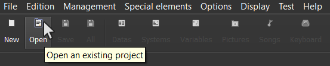
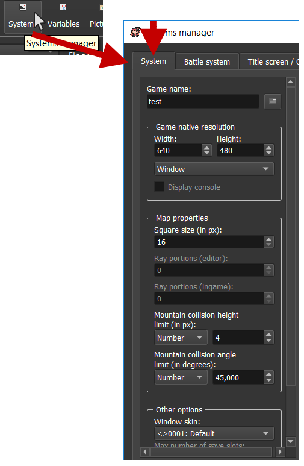
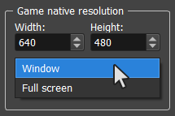
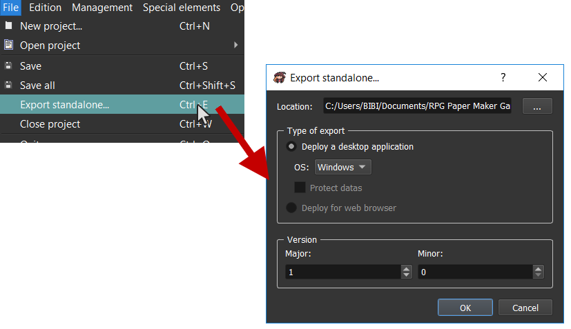

Getting started
Welcome to this guide! You will find here all what you need to be a pro Paper Maker!
License
RPG Paper Maker is free for non commercial use. You don't have any fee to pay as long as you don't plan to publish commercial games done with RPG Paper Maker.
RPG Paper Maker is proprietary licensed. See the RPG Paper Maker EULA here. RPG Paper Maker was previously open source, but the software keeps a lot of these aspects (source code access on github, free for non commercial use...). Feel free to contribute to the github repository here if you have any skills in programming, project management, etc. Be aware that any contribution becomes RPG Paper Maker property, but we guaranty that RPG Paper Maker will always be available for free.
If you want to support us financially for the free model, check out our Patreon!
The commercial license is not released yet. This is comming out soon.
Community and support
If you are experiencing any issue on RPG Paper Maker, feel free to ask for some help in the website forums. You can also share your creations and propose your wanted next features.
Installation
Go to the Download section from the official website and download the installer according to your system.
Windows
Run RPG Paper Maker installer.exe. This will install the program on your computer and run RPG Paper Maker.exe. This will ask you for downloading the latest version of RPG Paper Maker. Wait for the downloading to be finished.
Linux
Extract the file. Check out the README instructions in the root of the folder. After running the last instruction (./run.sh), this will ask you for downloading the latest version of RPG Paper Maker. Wait for the downloading to be finished.
MacOSX
Extract the file. After running RPG Paper Maker.app, this will ask you for downloading the latest version of RPG Paper Maker. Wait for the downloading to be finished.
Change theme
There actually are two different themes: Dark and White. If you want to change it, go to Options > General options....

Create a new project
You can create a new project by clicking here on the main toolbar:

You can also use CTRL+N or go to File > New project....

You can choose here the Project name corresponding to your game's name. This will auto generate a folder name (you can disable the option auto-generate if you want to customize your folder name). And finally, choose the location of your project folder. By default, it will be on a freshly created RPG Paper Maker Games folder.
Open an existing project
You can open an existing project by clicking here on the main toolbar:

You can also use CTRL+O or go to File > Open project > Browse.... Recent projects can also be opened on the first screen (or go to File > Open project).
Change general game settings
A lot of options are available in the Systems manager. Click here on the main toolbar and go to the System tab:

Game name: (not available yet) Change the name of your game.Game native resolution: (not available yet) Change width / height resolution and also choose if you want a Window or Fullscreen display.Display consoleoption is for programing debugging.Square size (in px): choose here the size (in pixel) of a square in your maps. You should adapt your textures after any change here.Ray portions to show: (not available yet) The map is separated into several portions (16x16 squares). You can change here the number of portions to display.Relief block height (in px): (not available yet) The height considered for blocking the hero so the hero can go up blocks that are in inferior height value.Max number of save slots: (not available yet) Change the max number of save slots available for the players.Price of sold item: (not available yet) Change the percent value of the original price of an item when you want to sell it in a shop.
Update keyboard controls
You can change the engine and game keyboard controls in the keyboard manager by clicking on the main toolbar:

For engine:
CursorUp,CursorDown,CursorLeft,CursorRight: The cursor directions in map editor.
For Game:
UpHero,DownHero,LeftHero,RightHero: The hero directions in map.UpMenu,DownMenu,LeftMenu,RightMenu: The directions in menus.LeftCamera,RightCamera: Turn the camera.Action: Hero action in map.Cancel: Cancel in menus.Main menu: Open / Close main menu.
Select the corresponding system menus controls: Action, Cancel, Up, Down, Left, Right. You can add as much keys as possbile.
When adding / editing a key:
Abbreviation: Name used for JavaScript use (for programers).Description: Will be displayed ingame for the keyboard settings menu.Shortcut: Change the shortcut here. Press the corresponding shortcut thanks toChange...button. You can have several shortcuts for one action (separated with|symbol) and also several keys for one shortcut (separated with+symbol).Remove last: Remove the last shortcut (on the right).Remove all: Remove all the entered shortcuts.
Update general colors
Go to the Systems manager > System and take a look on the Colors box:

Change game name
Go to the Systems manager > System and take a look on the Game name box:

This will affect the window title when you are launching the game.
Change game screen resolution
Go to the Systems manager > System and take a look on the Game native resolution box:

Width: The native width of your game window.Height: The native height of your game window.Window: Choose a window mode.Full screen: choose full screen mode. Note thatWidthandHeighthave no effect with this option.
Test your game
You can test your opened project by clicking here on the main toolbar:

Deploy your game
If you want to publish your game (share your game without any need for players to have RPG Paper Maker installed) you have to go to File > Export standalone....

Location: The location of the standalone folder that you want to create. The name of this folder will beyourGameName{OS}.Type of export: Choose export options here.Deploy a desktop application: Choose here to deploy your game as a desktop application (choose theOSin options: Windows, Linux, or Mac).Deploy for web browser: (not available yet) Choose here to deploy your game as a web application. This will generate anindex.htmlpage and other files.
Version: Choose you game version. Having 1 formajorand 0 forminorwill create a 1.0 version.